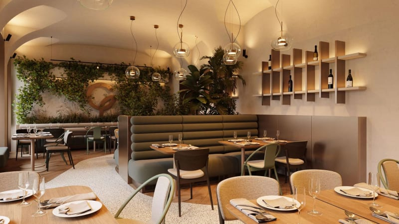

Bistro se srdcem v Praze
Kuchyně, která ctí roční období
Vaříme z toho, co právě dozrává na trhu, a servírujeme to pod korunou staré lípy na naší zahrádce. Žádné zbytečnosti na talíři, jen chuť, na které záleží.

Náš příběh
Od rodinné zahrádky k jídelnímu lístku
Bistro U Lípy vzniklo v roce 2016 z touhy vařit poctivě a bez kompromisů. Zelenina a bylinky rostou přímo na naší zahrádce, maso a ryby vybíráme od farmářů, které osobně známe.
Jídelní lístek se mění s ročním obdobím. To, co dnes najdete na talíři, zítra může vypadat úplně jinak. Věříme, že nejlepší chuť má jídlo, které respektuje svůj čas.
Co říkají hosté
Reference
Kdy nás najdete
Otevírací doba
Pondělí – Čtvrtek11:30 – 22:00
Pátek – Sobota11:30 – 23:00
Neděle11:30 – 21:00
Rezervace
Zarezervujte si stůl
Na víkendy doporučujeme rezervovat alespoň 3 dny dopředu. Na vyplněný formulář se ozveme do 24 hodin s potvrzením.
Rezervace odeslána
Děkujeme, ozveme se vám co nejdřív s potvrzením termínu.